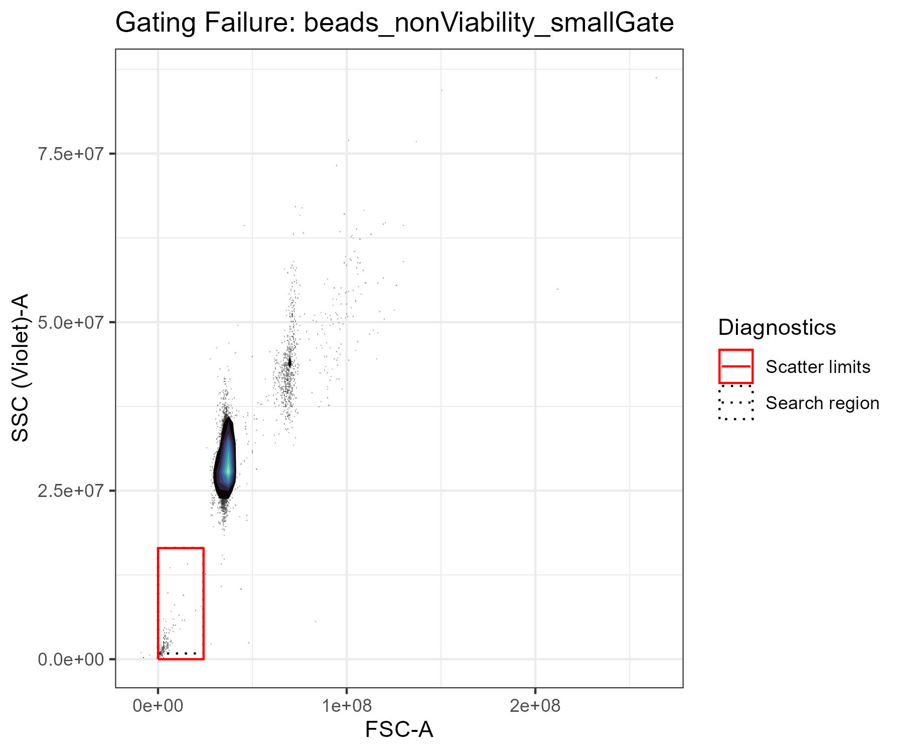
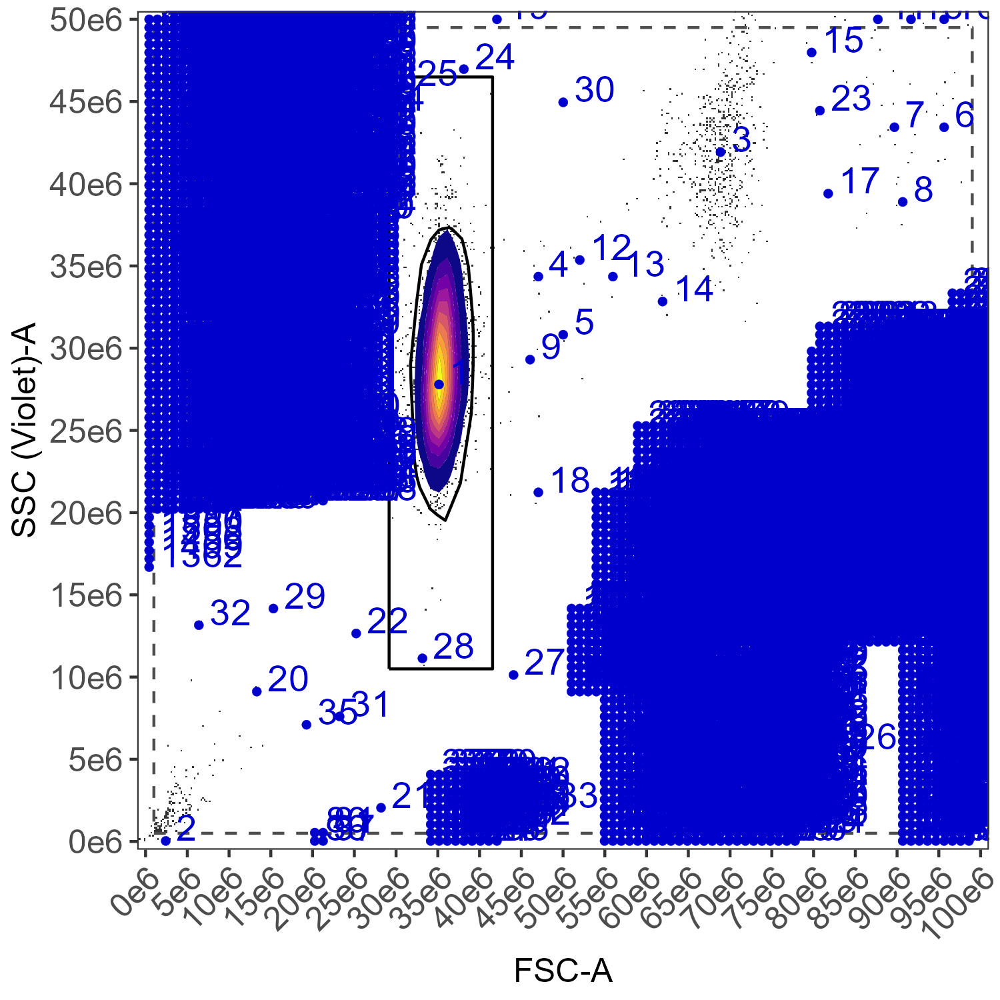
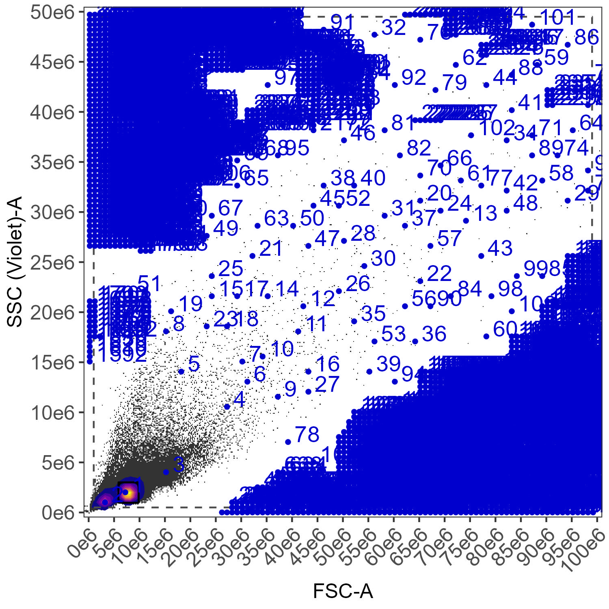
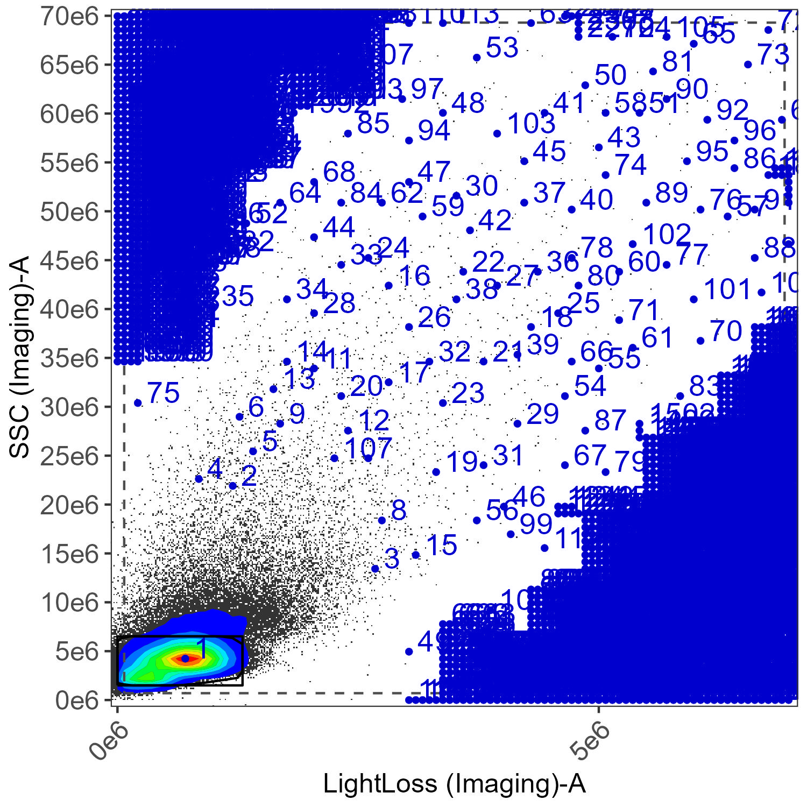
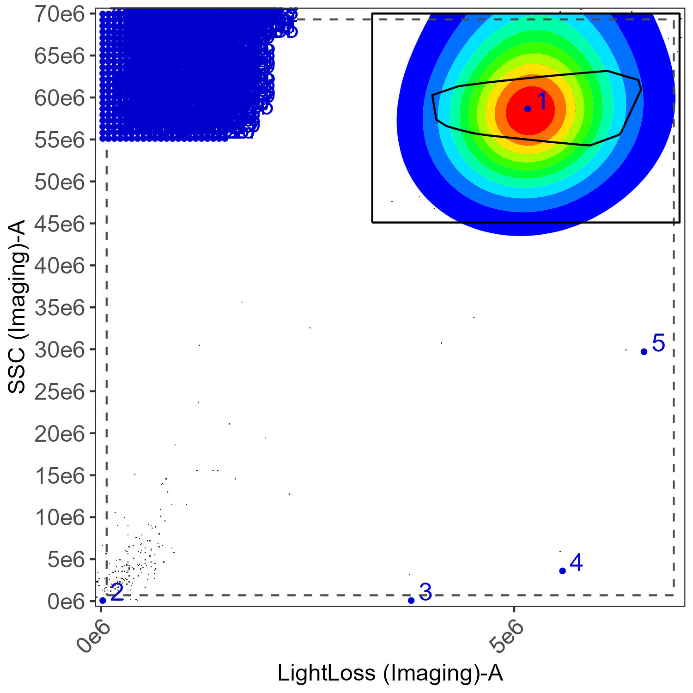
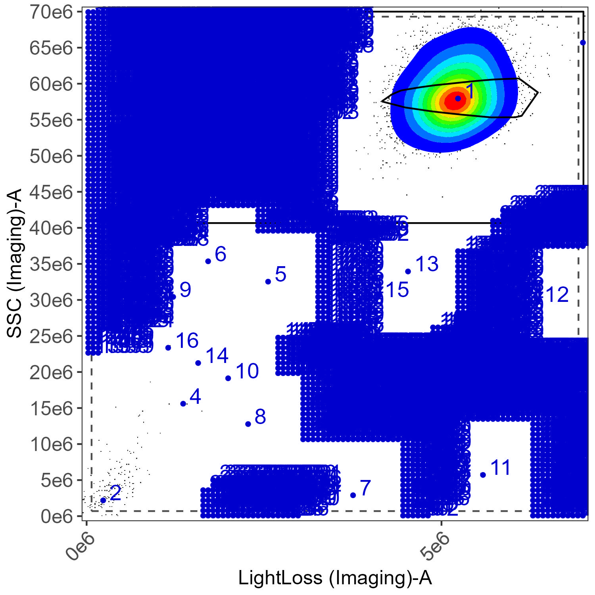
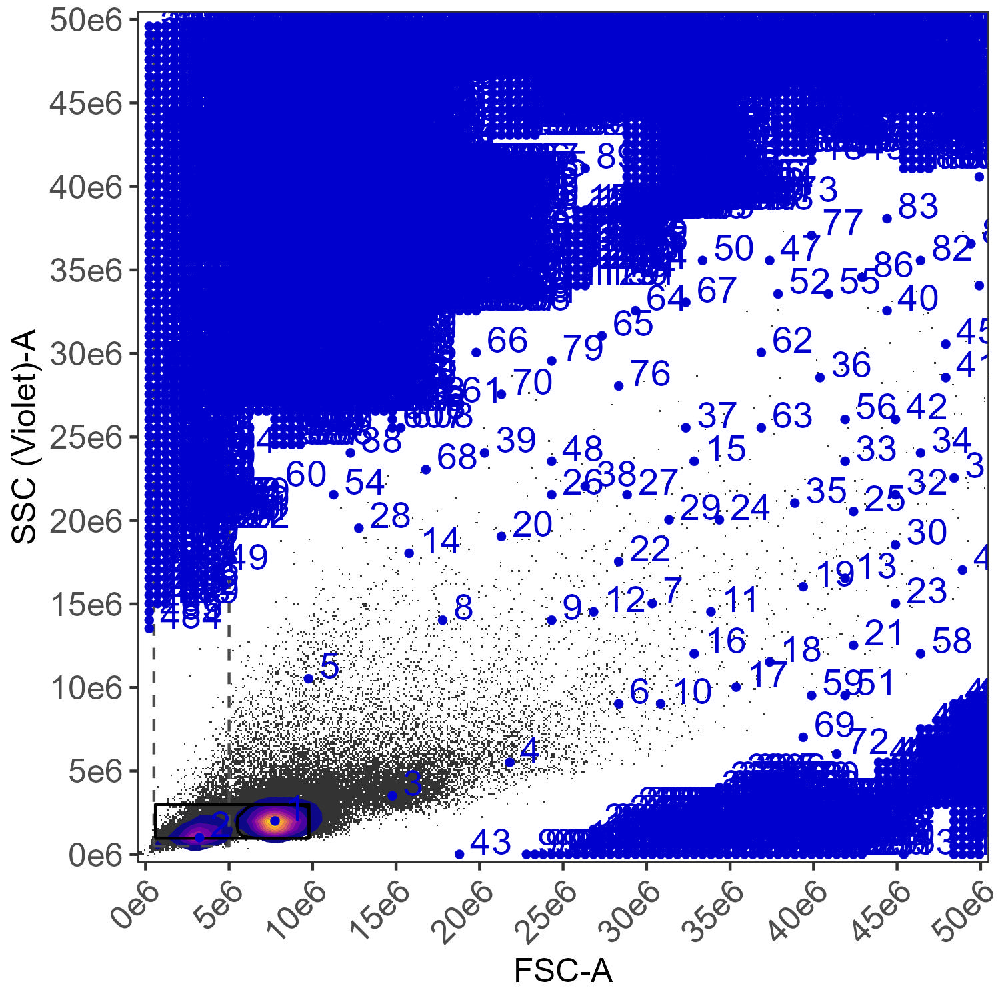

07 Gating parameters for density gating
Source:vignettes/articles/07_Gating_Parameters_Density.Rmd
07_Gating_Parameters_Density.RmdIn this article, we’ll go into more depth on how the automated
density-based gating in AUtoSpectral works, covering the parameters that
modify it. For this, we are focusing on the original gating system
copied from AutoSpill. This article is most relevant if you are using a
version of AutoSpectral prior to 1.5.0 or if you are using
gating.system = "density" without supplying any pre-defined
gates to define.flow.control().
For better control of the gating, update to AutoSpectral version
1.5.0, and use the tune.gates() function to get the gates
looking the way you want before calling
define.flow.control(). For this, see article Advanced
Gating.
That said, let’s go over the various parameters that control the automated density-based gating in AutoSpectral, which can help you adjust the gates to work better for your samples.
Note below: you will need to change your working directory if you run this yourself.
library(AutoSpectral)
knitr::opts_knit$set(root.dir = 'C:/Users/Oliver Burton/OneDrive - University of Cambridge/Documents/AutoSpectral_data/Gating_params')Today we’re going to use a simple PBMC set run on the FACSDiscover A8. The FACSDiscover cytometers are, I think, a nice example for today because they have a very wide working range for the scatter detectors, which, while great for dealing with a huge array of sample types, makes the automated gating more challenging due to the large search space. You can try this out by downloading some files from the OMIP-102 dataset, or better, try it out on your own data (be sure to set the correct cytometer when calling get.autospectral.param()).
Since this is all about gating and understanding how it works, we don’t need a full set of single-stained controls, so I’m just going to include a single stained and unstained sample, but use one from cells, one from BD comp beads and one from BD SpectraComp beads. This will give us a bunch of stuff to work with.
asp <- get.autospectral.param(cytometer = "a8", figures = TRUE)
control.dir <- "~/AutoSpectral_data/Gating_params/SSC"
create.control.file(control.dir, asp)I don’t have the marker names in the FCS file names, so AutoSpectral can’t match the markers. This triggers a warning because multiple controls are the same (“No match”). We can fix this by editing the control file manually. If you wanted, you could also add the marker names to the FCS files, which is good practice anyway.
Here’s what the control file looks like at this point, after I’ve set universal negatives and filled in the markers.
control.file <- "~/AutoSpectral_data/Gating_params/fcs_control_file.csv"
read.csv(control.file)For good practice, we’ll check that there are no mistakes in this before proceeding.
check.control.file(
control.dir = control.dir,
control.def.file = control.file,
asp = asp
)We’ve got some warnings, but no errors. Notice that the two warnings relate to the gating; these are telling us we haven’t provided any instructions for the gating, and that’s probably not what we want, but it will still work.
Let’s start by just loading in the data using
define.flow.control(), which will use the default settings
for the automated density-based gating. Note: in AutoSpectral version
1.5.0 and higher, we need to specify
gating.system = "density" for this to be the default
behavior.
flow.control <- define.flow.control(control.dir, control.file, asp)Immediately we have a failure, at least with this version of AutoSpectral. You may have run into this sort of issue, with incomprehensible error messages, which is really frustrating. The new approach (see article) should make this a lot more manageable, but let’s work through it here as well.
We have a diagnostic plot generated in folder “figure_gate”. Let’s look at that:

AutoSpectral is looking for your beads or cells in a specific region. This is telling us that the current search window is not where the beads are. These beads are really high on scatter, and the default settings for the scatter limits for the A8 are much smaller. This is indicated by the black box drawn on the plot. This same issue can affect the S8 and Opteon, which have similarly large ranges for scatter.
How do we fix this?
The scatter limits are controlled by these parameters:
asp$scatter.data.min.x # minimum value for Forward Scatter
asp$scatter.data.max.x # max value for Forward Scatter
asp$scatter.data.min.y # minimum value for Side Scatter
asp$scatter.data.max.y # max value for Side ScatterSo, our SSC is current capped at 1.6e7, while our beads are up around 3e7. Similarly, our FSC is capped to 2.4e7, while the beads are between 4-5e7. We need to change the maximum value for both.
asp$scatter.data.max.x <- 1e8
asp$scatter.data.max.y <- 5e7Now we can try again.
flow.control <- define.flow.control(control.dir, control.file, asp)Great, no errors! Did it work, though?
Let’s check the gating plots. The ones with lots of numbered points on them are the ones that define the automated gating. These are the most important for troubleshooting. These are done on composite files, aggregated between all samples that have been determined to share the same gate (the gating variables are beads/cells, large/small, viability gate/live cell, so any combination of those).
Gating on the beads:

This is what it is supposed to look like when it is working well. The squareregion gate defines the area
around the highest density of events, and the gate border is the
smoothed line inside that. In this case, it’s pretty clearly picked the
bead population (1). Population 3 is bead doublets. Population 2 is
debris.
What about the cells? What do we want? We want a gate that includes the lymphocyte region because we’re staining for CD4. Did we get that?
CD4 gating: No, we didn’t. It’s picked population 3, which is the doublets.
What’s going on? AutoSpectral looks for the cells within a boundary (expecting the cells to be up a bit off the axis) and expects there to be a debris/dead cell population in the lower left corner. The search boundary is the dotted black line, and the population we want (1) is considered too close to the boundary (AutoSpectral expects us to position the cells on scatter using more of the available space).
There are a few ways we can fix this. I’m going to show you three options, resetting the parameters I change after each example.
First: I set the FSC maximum deliberately quite high, too high in fact. Let’s set a more reasonable value, stretching the cells out on the FSC while keeping the beads on screen.
asp$scatter.data.max.x <- 5e7
flow.control <- define.flow.control(control.dir, control.file, asp)Now we have identified the lymphocyte population correctly.
Second option: We keep the higher FSC limit, but where we look for the population. By default, AutoSpectral does not search the entire plot region for your cells, expecting the lower left corner to be full of debris. Because of how we’ve scaled the plot with the scatter limits, our cells are in the lower left corner.
asp$scatter.data.max.x <- 1e8
asp$gate.bound.density.max.exclusion.x.cells
asp$gate.bound.density.max.exclusion.y.cellsBy default, we’re excluding 0.1 (10%) of the FSC and 0.05 (5%) of the SSC from the search. Let’s allow it to search lower down on FSC. Notice that these parameters are called “cells”–there are versions of these and most gating parameters for both beads and cells, allowing you more control.
asp$gate.bound.density.max.exclusion.x.cells <- 0.02
flow.control <- define.flow.control(control.dir, control.file, asp)And this has also fixed the problem.

Let’s look at a couple more parameters and how they influence the gating. For these next examples I’m going to change the FSC and SSC limits to get things a bit bigger. We can also change the color scheme for the plots.
On many spectral cytometers, you get more than one side scatter detector, and, actually, on the Discover, we also get another forward scatter detector with the imaging. Can we use the other one(s)? Yes. By default, AutoSpectral will use these channels:
asp$default.scatter.parameterTo use different channels, you need to type these in carefully. You’ll also need to figure out yourself what good limits are for these, which you can do by reading the values from a plot in FlowJo or FCS Express.
asp$default.scatter.parameter <- c(
"LightLoss (Imaging)-A",
"SSC (Imaging)-A"
)
asp$scatter.data.max.x <- 7e6
asp$scatter.data.max.y <- 7e7
flow.control <- define.flow.control(control.dir, control.file, asp,
color.palette = "rainbow")Here’s what that looks like:

This bead gate is a little funky. It’ll be fine, but we can use this as an example of how to tune another parameter: bandwidth. The bandwidth controls how smooth the data looks to AutoSpectral when defining the gates. There are two separate parameters for this for both beads and cells because there are two steps at which the density is estimated.
asp$gate.bound.density.bw.factor.beads
asp$gate.region.density.bw.factor.beadsWe can increase these values to try to smooth out the data, which usually has the effect of extending the gate out to include lower density regions.
asp$gate.bound.density.bw.factor.beads <- 24
asp$gate.region.density.bw.factor.beads <- 24
flow.control <- define.flow.control(control.dir, control.file, asp,
color.palette = "rainbow")This works somewhat, but because the density calculation also
controls the pseudocolor plotting, the density is smoothed out as well,
making it look like the beads are covering more area than before. This
could be fixed by making the calculations independent, but that is slow
in R and this is better handled using the new tune.gate()
approach.

Alternatively, we can adjust the number of standard deviations around the median that AutoSpectral looks at when defining the gate
asp$gate.bound.density.max.mad.factor.beadsLet’s look for data farther from the median by increasing the mad.factor (and reset the bandwidth/smoothing):
asp$gate.bound.density.bw.factor.beads <- 6
asp$gate.region.density.bw.factor.beads <- 6
asp$gate.bound.density.max.mad.factor.beads <- 12
flow.control <- define.flow.control(control.dir, control.file, asp,
color.palette = "rainbow")What did this do? It changed the final search region, that black box around the beads. It didn’t change the final gate at all.

If any point you aren’t sure what you’ve done, you can reset all the parameters by re-invoking the parameter function (perhaps you may want to call one of the parameter sets by a different name to save your work, though).
asp <- get.autospectral.param(cytometer = "a8", figures = TRUE)More parameters:
# the number of cells used to calculate the gate
# more may be more accurate, but will take longer
# 1e5 is usually plenty
asp$gate.downsample.n.cells
# the size of the grid for estimating the kernel density (where the cells are)
# lower numbers = faster
# larger numbers = more detail, much slower
# as low as 50 can be okay, 200 is probably ideal but quite a bit slower
asp$gate.region.density.grid.n.cells
asp$gate.bound.density.grid.n.cellsThere are to extra parameters that you specify in the control file,
giving you some ability to create different gates. Please note that as
of version 1.5.0, you can create and specify any number of gates using
the tune.gate() and define.gate functions. Let’s look at
the old way of doing this, though.
The default gating for cells tries to pick out the lymphocyte region.
We have the option to set large.gate as TRUE
in the control file for any cell samples. This extends the gate up and
to the right, trying to capture larger cells such as monocytes.
Let’s make a new control file, setting large.gate = TRUE
for the cells.
control.file.large <- "~/AutoSpectral_data/Gating_params/fcs_control_file_large.csv"
read.csv(control.file.large)
flow.control <- define.flow.control(control.dir, control.file.large, asp)With a larger gate set, we get this for the cells:
The large.gate option does something pretty simple–it extends the basic roundish gate upwards and outwards (to the top and to the right). The amount by which it scales upwards and outwards is determined by the parameters below, which are defined on a cytometer-specific basis.
asp$large.gate.scaling.x
asp$large.gate.scaling.yIf we want to make it even bigger, we can do this:
asp$large.gate.scaling.x <- 10
asp$large.gate.scaling.y <- 20
flow.control <- define.flow.control(control.dir, control.file.large, asp)With an even larger gate set:
Similarly, we have the is.viability option. This also
does something simple. Since the dead cells are typically a bit to the
left of the target population, setting is.viability = TRUE
will extend the gate leftwards to try to catch more dead cells. This
ensures we have dead cells in the gate for the viability marker sample.
This option will be set automatically in AutoSpectral if your viability
marker is recognized.
Let’s pretend our CD4 stain is actually a viability marker, setting
is.viability to TRUE.
control.file.via <- "~/AutoSpectral_data/Gating_params/fcs_control_file_via.csv"
read.csv(control.file.via)
flow.control <- define.flow.control(control.dir, control.file.via, asp)How much to the left the gate extends is controlled by this:
asp$viability.gate.scalingIf we want it to go further left, we decrease the number. The number takes the initially calculated gate position (based on the target cell population), and decreases the lower FSC bound proportionally, so cutting it to 2/3rds by default. Let’s go way down.
asp$viability.gate.scaling <- 0.1
flow.control <- define.flow.control(control.dir, control.file.via, asp)
The is.viability and large.gate scaling options can be combined, but
again, you’re better off modulating your gates using the functions
define.gate.density(), define.gate.landmarks()
and tune.gate().